首页 > 编程笔记
单链表反转详解（4种算法实现）
通过前面章节的学习，读者已经对单链表以及它的用法有了一个完整的了解。在此基础上，本节再带领大家研究一个和单链表有关的问题，即如何实现单链表的反转。
反转链表，又可以称为翻转或逆置链表，它们表达的是同一个意思。以图 1 所示的链表为例：

图 1 未反转的链表
经过反转（翻转、逆置）后，得到的新链表如图 2 所示：

图 2 反转后的链表
通过对比图 1 和 图 2 中的链表不难得知，所谓反转链表，就是将链表整体“反过来”，将头变成尾、尾变成头。那么，如何实现链表的反转呢？
常用的实现方案有 4 种，这里分别将它们称为迭代反转法、递归反转法、就地逆置法和头插法。值得一提的是，递归反转法更适用于反转不带头节点的链表；其它 3 种方法既能反转不带头节点的链表，也能反转带头节点的链表。
本节将以图 1 所示，即不带头节点的链表为例，给大家详细讲解各算法的实现思想。
具体的实现方法也很简单，借助 3 个指针即可。以图 1 中建立的链表为例，首先我们定义 3 个指针并分别命名为 beg、mid、end。它们的初始指向如图 3 所示：
在上图的基础上，遍历链表的过程就等价为：3 个指针每次各向后移动一个节点，直至 mid 指向链表中最后一个节点（此时 end 为 NULL ）。需要注意的是，这 3 个指针每移动之前，都需要做一步操作，即改变 mid 所指节点的指针域，另其指向和 beg 相同。
1) 在图 3 的基础上，我们先改变 mid 所指节点的指针域指向，另其和 beg 相同（即改为 NULL），然后再将 3 个指针整体各向后移动一个节点。整个过程如图 4 所示：
2) 在图 4 基础上，先改变 mid 所指节点的指针域指向，另其和 beg 相同（指向节点 1 ），再将 3 个指针整体各向后移动一个节点。整个过程如图 5 所示：

图 5 迭代反转链表过程二
3) 在图 5 基础上，先改变 mid 所指节点的指针域指向，另其和 beg 相同（指向节点 2 ），再将 3 个指针整体各向后移动一个节点。整个过程如图 6 所示：
4) 图 6 中，虽然 mid 指向了原链表最后一个节点，但显然整个反转的操作还差一步，即需要最后修改一次 mid 所指节点的指针域指向，另其和 beg 相同（指向节点 3）。如图 7 所示：
如下是实现整个过程的代码：
鉴于该方法的实现用到了递归算法，不易理解，因此和讲解其他实现方法不同，这里先给读者具体的实现代码，然后再给大家分析具体的实现过程：
1) 由于 head 不为 NULL，因此函数每执行到第 11 行时，递归都会深入一层，并依次将指向节点 2、3、4 的指针作为实参（head_next 的指向）参与递归。而根据递归出口的判断条件，当函数参数 head 指向的是节点 4 时满足 head->next == NULL，递归过程不再深入，并返回指向节点 4 的指针，这就是反转链表的新头指针。
因此，当递归首次退出一层时，new_head 指向的是节点 4 ，而 head 由于退出一层，指向的是节点 3，如图 8 所示。
2) 在此基础上，开始执行 17、18 行代码，整个操作过程如图 9 所示，最后将 new_head 的指向继续作为函数的返回值，传给上一层的 new_head。
4) 再退一层，此时 new_head 仍指向节点 4，而 head 退出一层后，指向的是节点 1。在此基础上执行 17、18 行代码，并返回 new_head。整个操作过程如图 11 所示：
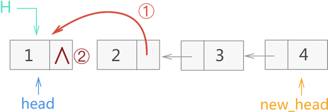
图 11 递归反转链表过程四
head 由节点 1 进入递归，此时 head 的指向又返回到节点 1，整个递归过程结束。显然，以上过程已经实现了链表的反转，新反转链表的头指针为 new_head。
仍以图 1 所示的链表为例，接下来为大家演示头插反转法的具体实现过程：
1) 创建一个新的空链表，如图 12 所示：
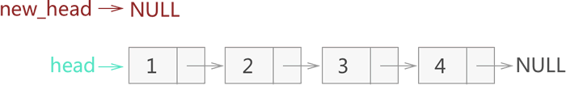
图 12 创建一个空链表
2) 从原链表中摘除头部节点 1，并以头部插入的方式将该节点添加到新链表中，如图 13 所示：
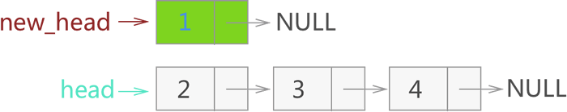
图 13 从原链表摘除节点 1，再添加到新链表中
3) 从原链表中摘除头部节点 2，以头部插入的方式将该节点添加到新链表中，如图 14 所示：
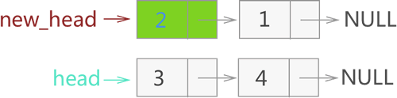
图 14 从原链表摘除节点 2，再添加到新链表中
4) 继续重复以上工作，先后将节点 3、4 从原链表中摘除，并以头部插入的方式添加到新链表中，如图 15 所示：
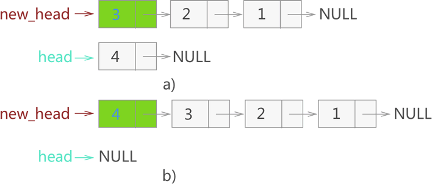
图 15 从原链表摘除节点 3、4，再添加到新链表中
由此，就实现了对原链表的反转，新反转链表的头指针为 new_head。
如下为以头插法实现链表反转的代码：
值得一提的是，在原链表的基础上做修改，需要额外借助 2 个指针（假设分别为 beg 和 end）。仍以图 1 所示的链表为例，接下来用就地逆置法实现对该链表的反转：
1) 初始状态下，令 beg 指向第一个节点，end 指向 beg->next，如图 16 所示：
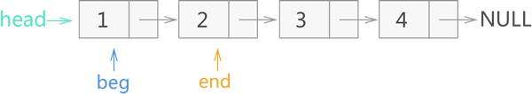
图 16 就地反转链表的初始状态
2) 将 end 所指节点 2 从链表上摘除，然后再添加至当前链表的头部。如图 17 所示：
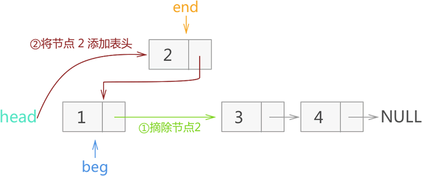
图 17 反转节点 2
3) 将 end 指向 beg->next，然后将 end 所指节点 3 从链表摘除，再添加到当前链表的头部，如图 18 所示：
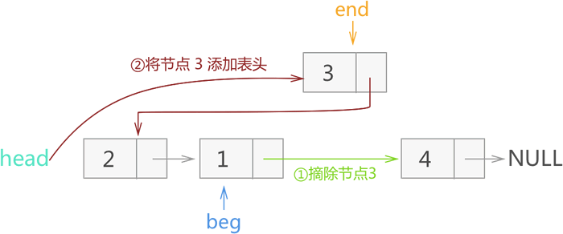
图 18 反转节点 3
4) 将 end 指向 beg->next，再将 end 所示节点 4 从链表摘除，并添加到当前链表的头部，如图 19 所示：
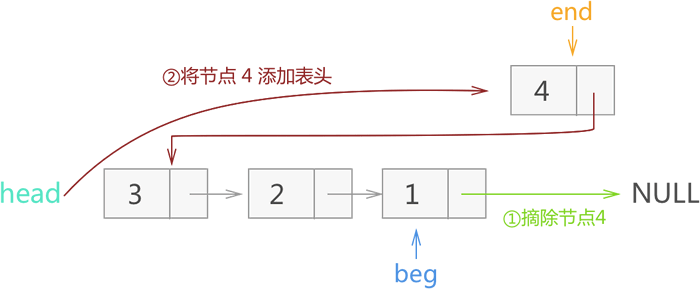
图 19 反转节点 4
由此，就实现了对图 1 链表的反转。
具体实现代码如下：
反转链表，又可以称为翻转或逆置链表，它们表达的是同一个意思。以图 1 所示的链表为例：
图 1 未反转的链表
经过反转（翻转、逆置）后，得到的新链表如图 2 所示：
图 2 反转后的链表
通过对比图 1 和 图 2 中的链表不难得知，所谓反转链表，就是将链表整体“反过来”，将头变成尾、尾变成头。那么，如何实现链表的反转呢？
常用的实现方案有 4 种，这里分别将它们称为迭代反转法、递归反转法、就地逆置法和头插法。值得一提的是，递归反转法更适用于反转不带头节点的链表；其它 3 种方法既能反转不带头节点的链表，也能反转带头节点的链表。
本节将以图 1 所示，即不带头节点的链表为例，给大家详细讲解各算法的实现思想。
1、迭代反转链表
该算法的实现思想非常直接，就是从当前链表的首元节点开始，一直遍历至链表的最后一个节点，这期间会逐个改变所遍历到的节点的指针域，另其指向前一个节点。具体的实现方法也很简单，借助 3 个指针即可。以图 1 中建立的链表为例，首先我们定义 3 个指针并分别命名为 beg、mid、end。它们的初始指向如图 3 所示：
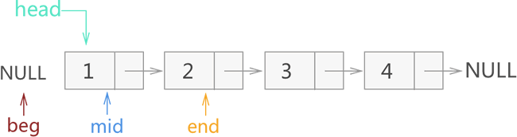
图 3 迭代反转链表的初始状态
图 3 迭代反转链表的初始状态
在上图的基础上，遍历链表的过程就等价为：3 个指针每次各向后移动一个节点，直至 mid 指向链表中最后一个节点（此时 end 为 NULL ）。需要注意的是，这 3 个指针每移动之前，都需要做一步操作，即改变 mid 所指节点的指针域，另其指向和 beg 相同。
1) 在图 3 的基础上，我们先改变 mid 所指节点的指针域指向，另其和 beg 相同（即改为 NULL），然后再将 3 个指针整体各向后移动一个节点。整个过程如图 4 所示：
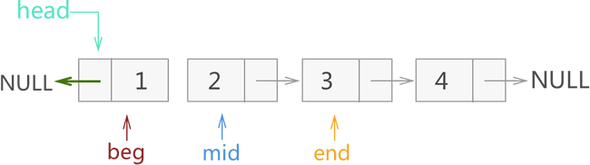
图 4 迭代反转链表过程一
图 4 迭代反转链表过程一
2) 在图 4 基础上，先改变 mid 所指节点的指针域指向，另其和 beg 相同（指向节点 1 ），再将 3 个指针整体各向后移动一个节点。整个过程如图 5 所示：
图 5 迭代反转链表过程二
3) 在图 5 基础上，先改变 mid 所指节点的指针域指向，另其和 beg 相同（指向节点 2 ），再将 3 个指针整体各向后移动一个节点。整个过程如图 6 所示：
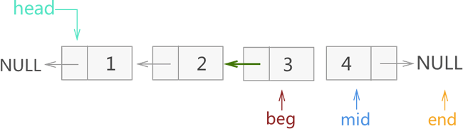
图 6 迭代反转链表过程三
图 6 迭代反转链表过程三
4) 图 6 中，虽然 mid 指向了原链表最后一个节点，但显然整个反转的操作还差一步，即需要最后修改一次 mid 所指节点的指针域指向，另其和 beg 相同（指向节点 3）。如图 7 所示：
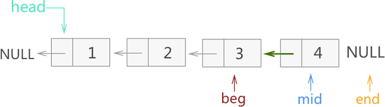
图 7 迭代反转链表过程四
图 7 迭代反转链表过程四
5) 最后只需改变 head 头指针的指向，另其和 mid 同向，就实现了链表的反转。注意，这里只需改变 mid 所指节点的指向即可，不用修改 3 个指针的指向。
如下是实现整个过程的代码：
//迭代反转法，head 为无头节点链表的头指针
link * iteration_reverse(link* head) {
if (head == NULL || head->next == NULL) {
return head;
}
else {
link * beg = NULL;
link * mid = head;
link * end = head->next;
//一直遍历
while (1)
{
//修改 mid 所指节点的指向
mid->next = beg;
//此时判断 end 是否为 NULL，如果成立则退出循环
if (end == NULL) {
break;
}
//整体向后移动 3 个指针
beg = mid;
mid = end;
end = end->next;
}
//最后修改 head 头指针的指向
head = mid;
return head;
}
}
2、递归反转链表
和迭代反转法的思想恰好相反，递归反转法的实现思想是从链表的尾节点开始，依次向前遍历，遍历过程依次改变各节点的指向，即另其指向前一个节点。鉴于该方法的实现用到了递归算法，不易理解，因此和讲解其他实现方法不同，这里先给读者具体的实现代码，然后再给大家分析具体的实现过程：
link* recursive_reverse(link* head) {
//递归的出口
if (head == NULL || head->next == NULL) // 空链或只有一个结点，直接返回头指针
{
return head;
}
else
{
//一直递归，找到链表中最后一个节点
link *new_head = recursive_reverse(head->next);
//当逐层退出时，new_head 的指向都不变，一直指向原链表中最后一个节点；
//递归每退出一层，函数中 head 指针的指向都会发生改变，都指向上一个节点。
//每退出一层，都需要改变 head->next 节点指针域的指向，同时令 head 所指节点的指针域为 NULL。
head->next->next = head;
head->next = NULL;
//每一层递归结束，都要将新的头指针返回给上一层。由此，即可保证整个递归过程中，能够一直找得到新链表的表头。
return new_head;
}
}
仍以图 1 中的链表为例，则整个递归实现反转的过程如下：1) 由于 head 不为 NULL，因此函数每执行到第 11 行时，递归都会深入一层，并依次将指向节点 2、3、4 的指针作为实参（head_next 的指向）参与递归。而根据递归出口的判断条件，当函数参数 head 指向的是节点 4 时满足 head->next == NULL，递归过程不再深入，并返回指向节点 4 的指针，这就是反转链表的新头指针。
因此，当递归首次退出一层时，new_head 指向的是节点 4 ，而 head 由于退出一层，指向的是节点 3，如图 8 所示。
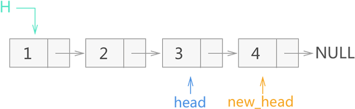
图 8 递归反转链表过程一
图 8 递归反转链表过程一
2) 在此基础上，开始执行 17、18 行代码，整个操作过程如图 9 所示，最后将 new_head 的指向继续作为函数的返回值，传给上一层的 new_head。
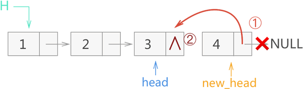
图 9 递归反转链表过程二
图 9 递归反转链表过程二
3) 再退一层，此时 new_head 仍指向节点 4，而 head 退出一层后，指向的是节点 2。在此基础上执行 17、18 行代码，并最终将 new_head 的指向作为函数返回值，继续传给上一层的 new_head。整个操作过程如图 10 所示：注意，图中节点 3 的 next 指针域
∧表示为 NULL。
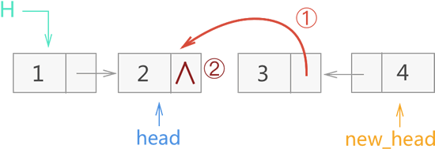
图 10 递归反转链表过程三
图 10 递归反转链表过程三
4) 再退一层，此时 new_head 仍指向节点 4，而 head 退出一层后，指向的是节点 1。在此基础上执行 17、18 行代码，并返回 new_head。整个操作过程如图 11 所示：
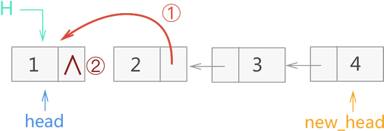
图 11 递归反转链表过程四
head 由节点 1 进入递归，此时 head 的指向又返回到节点 1，整个递归过程结束。显然，以上过程已经实现了链表的反转，新反转链表的头指针为 new_head。
3、头插法反转链表
所谓头插法，是指在原有链表的基础上，依次将位于链表头部的节点摘下，然后采用从头部插入的方式生成一个新链表，则此链表即为原链表的反转版。仍以图 1 所示的链表为例，接下来为大家演示头插反转法的具体实现过程：
1) 创建一个新的空链表，如图 12 所示：
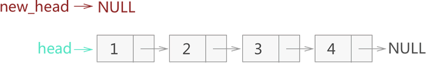
图 12 创建一个空链表
2) 从原链表中摘除头部节点 1，并以头部插入的方式将该节点添加到新链表中，如图 13 所示：
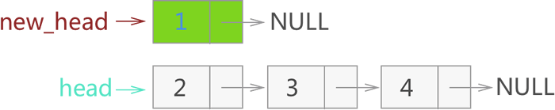
图 13 从原链表摘除节点 1，再添加到新链表中
3) 从原链表中摘除头部节点 2，以头部插入的方式将该节点添加到新链表中，如图 14 所示：
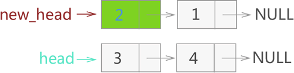
图 14 从原链表摘除节点 2，再添加到新链表中
4) 继续重复以上工作，先后将节点 3、4 从原链表中摘除，并以头部插入的方式添加到新链表中，如图 15 所示：
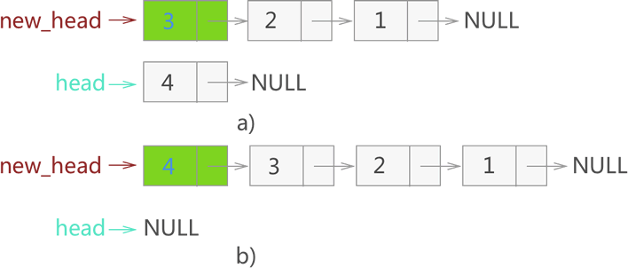
图 15 从原链表摘除节点 3、4，再添加到新链表中
由此，就实现了对原链表的反转，新反转链表的头指针为 new_head。
如下为以头插法实现链表反转的代码：
link * head_reverse(link * head) {
link * new_head = NULL;
link * temp = NULL;
if (head == NULL || head->next == NULL) {
return head;
}
while (head != NULL)
{
temp = head;
//将 temp 从 head 中摘除
head = head->next;
//将 temp 插入到 new_head 的头部
temp->next = new_head;
new_head = temp;
}
return new_head;
}
4、就地逆置法反转链表
就地逆置法和头插法的实现思想类似，唯一的区别在于，头插法是通过建立一个新链表实现的，而就地逆置法则是直接对原链表做修改，从而实现将原链表反转。值得一提的是，在原链表的基础上做修改，需要额外借助 2 个指针（假设分别为 beg 和 end）。仍以图 1 所示的链表为例，接下来用就地逆置法实现对该链表的反转：
1) 初始状态下，令 beg 指向第一个节点，end 指向 beg->next，如图 16 所示：
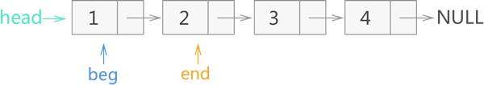
图 16 就地反转链表的初始状态
2) 将 end 所指节点 2 从链表上摘除，然后再添加至当前链表的头部。如图 17 所示：
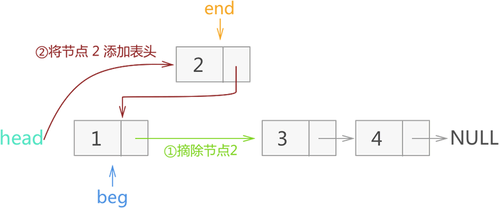
图 17 反转节点 2
3) 将 end 指向 beg->next，然后将 end 所指节点 3 从链表摘除，再添加到当前链表的头部，如图 18 所示：
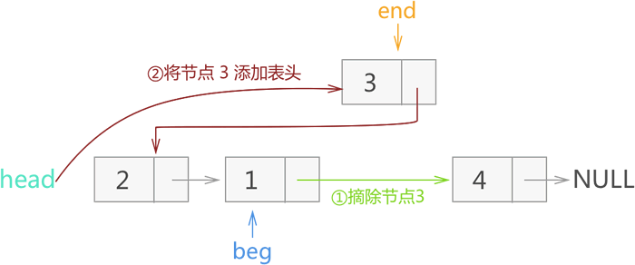
图 18 反转节点 3
4) 将 end 指向 beg->next，再将 end 所示节点 4 从链表摘除，并添加到当前链表的头部，如图 19 所示：
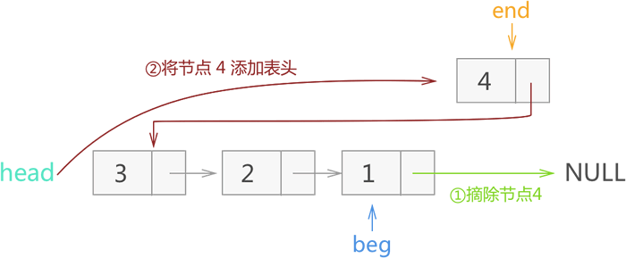
图 19 反转节点 4
由此，就实现了对图 1 链表的反转。
具体实现代码如下：
link * local_reverse(link * head) {
link * beg = NULL;
link * end = NULL;
if (head == NULL || head->next == NULL) {
return head;
}
beg = head;
end = head->next;
while (end != NULL) {
//将 end 从链表中摘除
beg->next = end->next;
//将 end 移动至链表头
end->next = head;
head = end;
//调整 end 的指向，另其指向 beg 后的一个节点，为反转下一个节点做准备
end = beg->next;
}
return head;
}
总结
本节仅以无头节点的链表为例，讲解了实现链表反转的 4 种方法。实际上，对于有头节点的链表反转：- 使用迭代反转法实现时，初始状态忽略头节点（直接将 mid 指向首元节点），仅需在最后一步将头节点的 next 改为和 mid 同向即可；
- 使用头插法或者就地逆置法实现时，仅需将要插入的节点插入到头节点和首元节点之间即可；
- 递归法并不适用反转有头结点的链表（但并非不能实现），该方法更适用于反转无头结点的链表。
结合以上说明，读者可尝试修改本节代码，使它们能用于反转带头节点的链表。对于反转没有头节点的链表，读者可从反转无头节点链表下载；反之，对于采用迭代法、头插法以及就地逆置法反转有头节点的链表，读者可从反转有头节点链表处下载。
关注公众号「站长严长生」，在手机上阅读所有教程，随时随地都能学习。内含一款搜索神器，免费下载全网书籍和视频。

微信扫码关注公众号